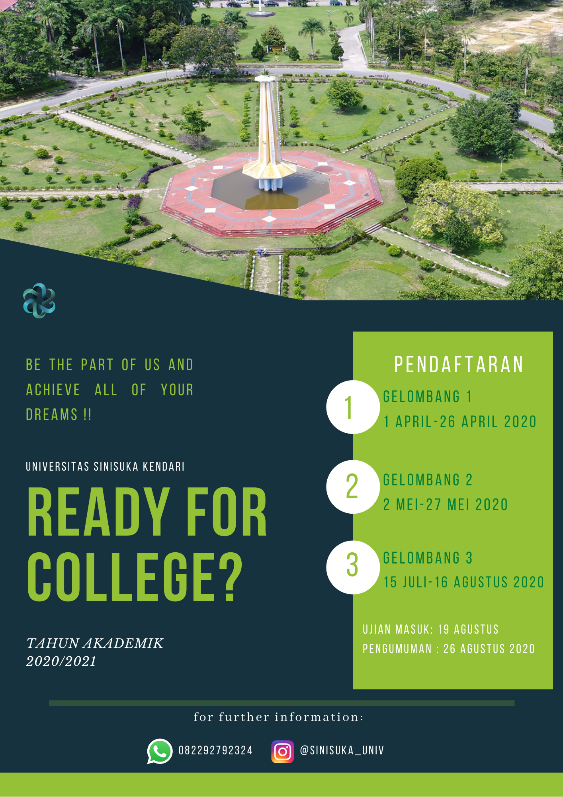

Registration is now open !
Written by nbilasals on Jan 19
Universitas Sinisuka adalah salah satu universitas yang berada di Kota Kendari dan didirikan pada tahun 19997 oleh Prof. Bagaskara Bayanaka. Perguruan tinggi ini semula merupakan pengembangan dari Fakultas Ekonomi Universitas Indonesia ketika Bung Hatta masih menjadi wakil presiden. Kampus ini telah menjadi satu dari sekian banyak kampus hebat di Indonesia terutama di Sulawesi Tenggara.
Pendaftaran mahasiswa baru tahun 2020/2021 Universitas Sinisukatelah dibuka.
Bagi Anda yang ingin menjadi bagian dari Universitas Sinisuka, segera daftarkan diri Anda.
Pendaftaran dibagi menjadi dua tahap, yaitu:
1. Online
2. Offline
Persyaratan Pendaftaran
1. Bagi lulusan SMA/SMK/MA atau sederajat dan Paket C, harus memiliki ijazah.
2. Bagi lulusan SMA/SMK/MA atau sederajat dan Paket C tahun 2020, telah memiliki Surat Keterangan Lulus yang memuat sekurang-kurangnya informasi jati diri, pas foto yang bersangkutan, serta dibubuhi cap yang sah.
3. Peserta seleksi dalam kondisi kesehatan yang memadai sehingga tidak mengganggu proses pembelajaran pada program studinya.
4. Ijazah adalah 3 tahun terakhir 2018, 2019, dan 2020
Jadwal Pendaftaran
Ujian Seleksi
19 Agustus 2020 di Universitas Sinisuka Kendari
Untuk Info selengkapnya, hubungi kami melalui: 082292792324 (WhatsApp) dan @sinisuka_univ